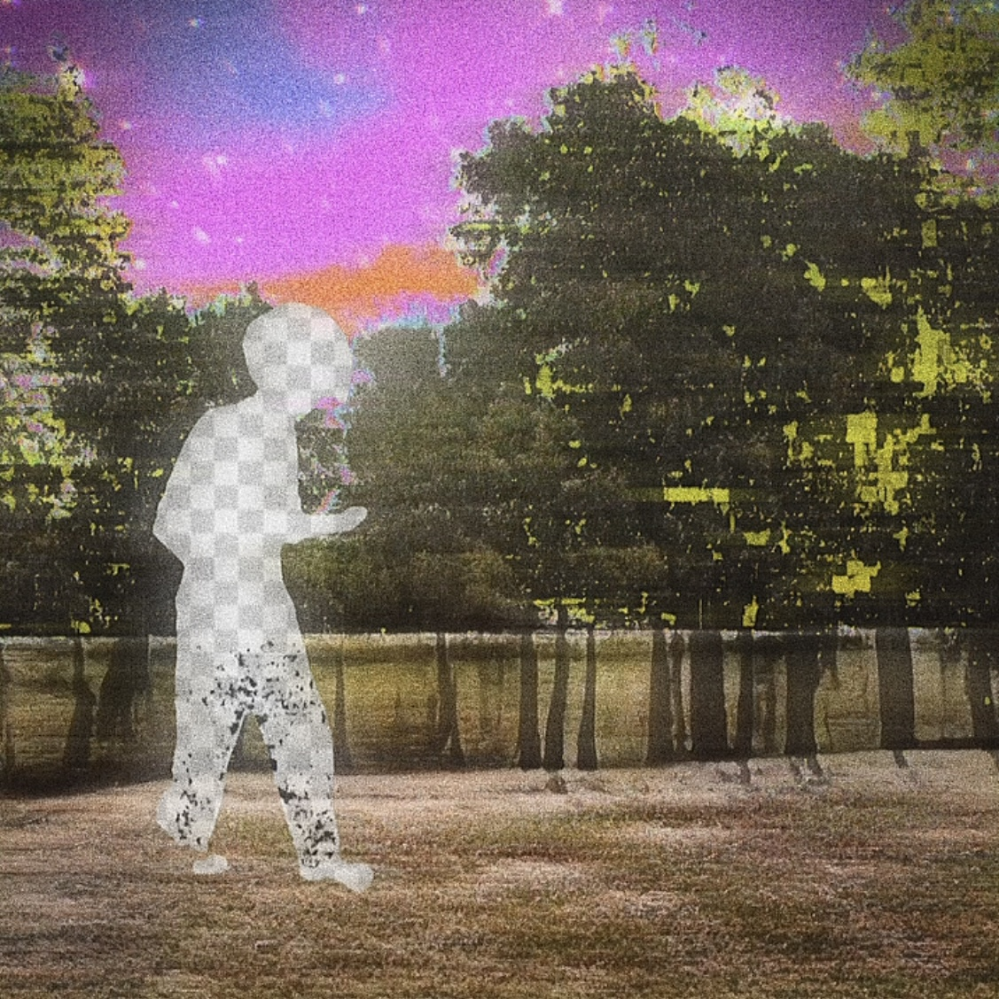
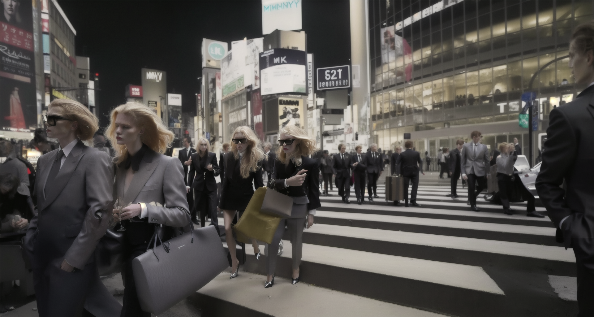
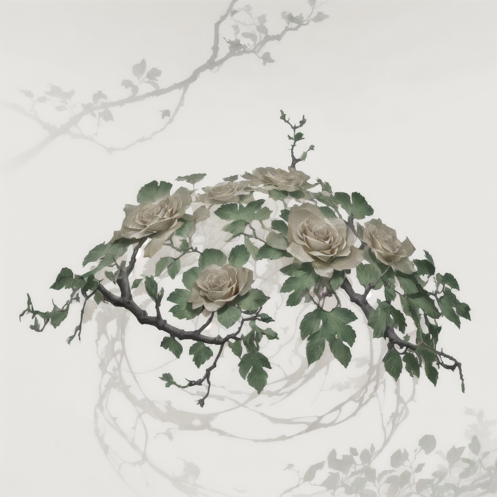
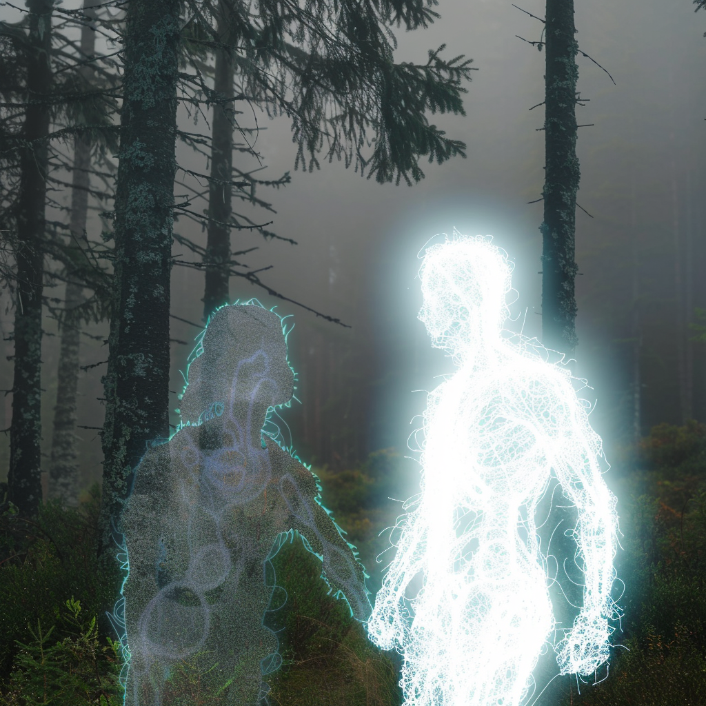
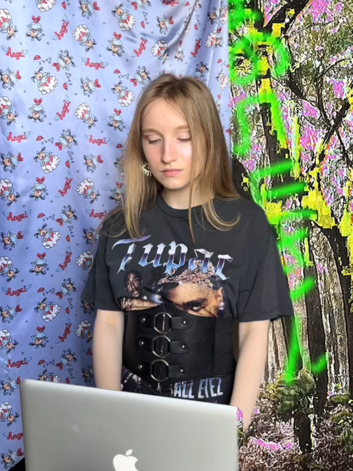
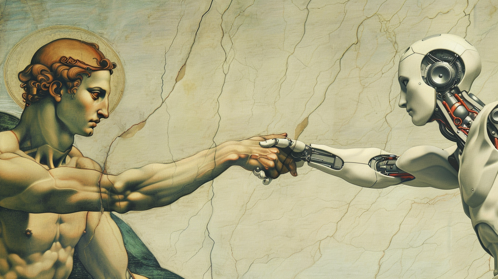
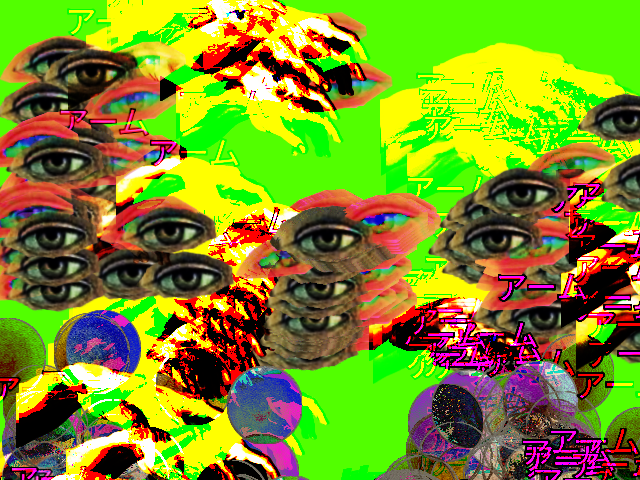

Материал из realless.glitch.me
О проекте
Вещи не всегда такие, какими кажутся. Закройте и откройте глаза. Что-нибудь изменилось?
Каждый раз, когда вы моргаете, незначительная часть контента меняется.
Использование искусственного интеллекта в искусстве представляет собой феномен, в котором современные компьютерные технологии и алгоритмы машинного обучения применяются для творческого процесса, анализа и интерпретации художественных произведений. Это влияет на различные сферы искусства, включая изобразительное искусство, музыку, литературу, а также создание интерактивных и персонализированных произведений искусства.
|  | |
| Сгенерированное изображение[1] |
|  | |
| Сгенерированное изображение[2] |
|  | |
| Сгенерированное изображение[3] |
|  | |
| Сгенерированное изображение[4] |
| Сгенерированное видео [3] |
| “ИИИвИ” | |
|---|---|
|  | |
| Фотография создателя в 2023 | |
| Статья написана | ИИ |
| Дата выхода v1.0.0 | 2021 |
| Дата выхода v2.0.0 | 2024 |
| Создатель | |
|  | |
| Создание искусственного интеллекта |
Искусственный интеллект в искусстве начал активно развиваться в последние десятилетия, параллельно с распространением компьютерных технологий и развитием алгоритмов машинного обучения. Первые эксперименты с использованием ИИ в искусстве были связаны с генерацией изображений и музыки. Эти пионерские исследования дали толчок для более глубокого понимания возможностей, которые предоставляют компьютерные алгоритмы в креативном процессе.
Однако с течением времени область применения искусственного интеллекта в искусстве стала гораздо шире и разнообразнее. Новые технологии и методы анализа данных позволили исследователям и художникам применять ИИ в различных сферах искусства. Литературное творчество, интерактивное искусство, визуальные эффекты в кино и многие другие аспекты искусства стали объектом внимания исследователей и творцов.
| 緑の4角_seed1999.png |
В современном мире генерация изображений с использованием искусственного интеллекта стала одним из наиболее захватывающих исследовательских направлений. Два из наиболее популярных метода в этой области - Stable Diffusion и генеративно-состязательные сети (GAN) - представляют собой мощные инструменты для создания удивительно реалистичных и непредсказуемых изображений.
| Сгенерированное изображение[1] |
Stable Diffusion - это относительно новый подход к генерации изображений, основанный на идее диффузии контента через широкий диапазон времени. Этот метод использует технику обучения под названием "диффузия с конечным временем", которая моделирует эволюцию пикселей изображения со временем. Он применяется в сочетании с глубокими нейронными сетями, чтобы генерировать изображения с высоким разрешением и высоким качеством.
Генеративно-состязательные сети (GAN) - это другой популярный метод генерации изображений, который состоит из двух основных компонентов: генератора и дискриминатора. Генератор создает изображения, а дискриминатор пытается различить между реальными и сгенерированными изображениями. Эти две сети соревнуются друг с другом в процессе обучения, что позволяет генератору создавать все более реалистичные изображения.
| Сгенерированное изображение[4] |
| Сгенерированное изображение[3] |
| Сгенерированное изображение[2] |
| Сгенерированное видео [3] |
Генерация видео с использованием искусственного интеллекта находит применение в различных областях искусства. От создания анимационных фильмов до генерации художественных произведений, эти методы помогают художникам и дизайнерам воплощать свои творческие идеи в жизнь.
Генерация видео с использованием искусственного интеллекта представляет собой процесс создания видео материалов с помощью алгоритмов машинного обучения. Основными методами генерации видео являются использование глубоких нейронных сетей, генеративно-состязательных сетей (GAN) и алгоритмического искусства.
| Сгенерированное видео [1] |
| Сгенерированное видео [2] |
| Сгенерированное видео [1] |
| Сгенерированное видео [2] |
|  | |
| Произведение, созданное с помощью алгоритма машинного обучения |
| Произведение, созданное с помощью алгоритма машинного обучения |
Интерактивное искусство, которое взаимодействует с зрителями или слушателями, также находит вдохновение в искусственном интеллекте. Алгоритмы машинного обучения могут анализировать реакции зрителей и адаптироваться к ним, создавая уникальные и непредсказуемые опыты искусства.
Примером такого интерактивного искусства может служить инсталляция, которая реагирует на движения и жесты зрителей, изменяя свой вид или звуковое сопровождение в реальном времени. Алгоритмы могут анализировать движения зрителей и создавать уникальные визуальные или звуковые эффекты, которые соответствуют их действиям.
Другим примером может быть интерактивное искусство, основанное на обработке естественного языка (Natural Language Processing, NLP). Алгоритмы могут анализировать комментарии зрителей или слушателей и создавать опыты искусства, которые отражают содержание и эмоциональную окраску их слов.
ИИ применяется в создании музыки. Алгоритмы могут анализировать музыкальные данные и создавать новые мелодии, ритмы и гармонии. Это открывает новые возможности для музыкантов и композиторов, позволяя им экспериментировать с новыми звуками и музыкальными стилями.
Примеры сгенерированных мелодий:
ИИ используется для генерации текстов, включая стихи, рассказы и даже романы. Алгоритмы могут анализировать большие объемы текстов и создавать новые произведения, которые могут быть как оригинальными, так и вдохновленными классическими произведениями литературы.
Пример сгенерированного стихотворения:
Луна восходит, озаряя путь,
Где звезды танцуют, вечный свет их дарит.
Дыхание ветра, в листве тайной шепчет,
И душа восхищается, красотой умирает.
Пример сгенерированного отрывка прозы:
“Поезд медленно скользил по рельсам, окутанный серым туманом осеннего утра. Вагоны медленно качались, и сквозь окна проникали тусклые лучи рассвета, словно пытаясь пробудить спящую природу за окном. В купе царила тишина, прерываемая лишь шумом колес, ритмично барабанящих по рельсам. На полках лежали заснеженные города и терпкий запах леса, проникающий сквозь закрытые окна.”
Благодаря искусственному интеллекту и анализу данных искусство становится более персонализированным для каждого зрителя или слушателя. Алгоритмы могут адаптировать контент под предпочтения конкретного человека, делая его взаимодействие с искусством более интимным и значимым. Это позволяет искусству стать более проникновенным и вдохновляющим для каждого отдельного человека.
| Synthesized podcast [Link] |
Однако, использование искусственного интеллекта в искусстве также вызывает некоторые вызовы. Одним из них является вопрос об авторстве и подлинности произведений, созданных с использованием алгоритмов машинного обучения. Как определить, что произведение искусства было создано именно художником, а не алгоритмом?
Кроме того, существует опасение, что использование искусственного интеллекта может привести к потере индивидуальности и оригинальности в искусстве. Если алгоритмы могут создавать произведения искусства, которые неотличимы от тех, что созданы людьми, то что делает искусство уникальным и ценным?
Несмотря на эти вызовы, будущее искусственного интеллекта в искусстве обещает быть захватывающим и перспективным. Мы можем ожидать дальнейшего развития технологий машинного обучения и глубокого обучения, что приведет к появлению новых методов создания искусства.
Кроме того, использование искусственного интеллекта может способствовать расширению границ творчества и вдохновлять художников на создание новых и уникальных произведений. Использование алгоритмов машинного обучения может помочь художникам в поиске новых идей и подходов к созданию искусства.